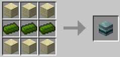
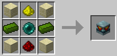
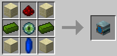
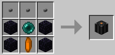
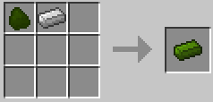
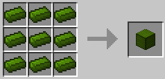
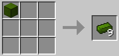
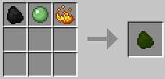
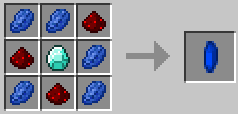
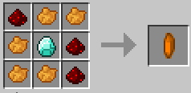

| Product |
Ingredients |
Recipe |
| Stargate Ring Block |
3 Chiselled Sandstone 3 Naquadah Alloy Ingots 3 Smooth Sandstone |
 |
| Stargate Chevron Block |
2 Chiselled Sandstone 2 Naquadah Alloy Ingots 2 Smooth Sandstone 1 Glowstone Dust 1 Ender Pearl 1 Redstone Dust |
 |
| Stargate Base Block |
2 Chiselled Sandstone 2 Naquadah Alloy Ingots 2 Smooth Sandstone 1 Redstone Dust 1 Eye of Ender 1 Stargate Core Crystal |
 |
| Stargate Controller |
3 Stone Buttons 4 Obsidian Blocks 1 Ender Pearl 1 Stargate Controller Crystal |
 |
| Product |
Ingredients |
Recipe | Notes |
| Naquadah Alloy Ingot |
1 Naquadah 1 Iron Ingot |
 | |
| Naquadah Alloy Block |
9 Naquadah Alloy Ingots |  | Does not currently have a use except for a way of storing your naquadah ingots, and as a rather expensive building material. |
| 1 Naquadah Alloy Block |
 |
| Product |
Ingredients |
Recipe | Configuration Option |
| Naquadah |
1 Coal 1 Slimeball 1 Blaze Powder |
 | allowCraftingNaquadah |
| Product |
Ingredients |
Recipe | Configuration Option |
| Stargate Core Crystal |
5 Blue Dye 3 Redstone Dust 1 Diamond |
 | allowCraftingCrystals |
| Stargate Controller Crystal |
5 Orange Dye 3 Redstsone Dust 1 Diamond |
 | allowCraftingCrystals |